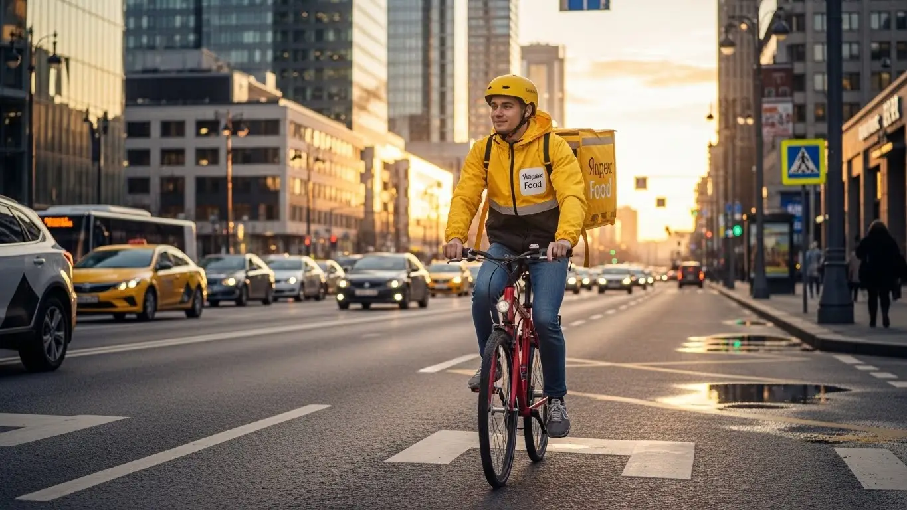
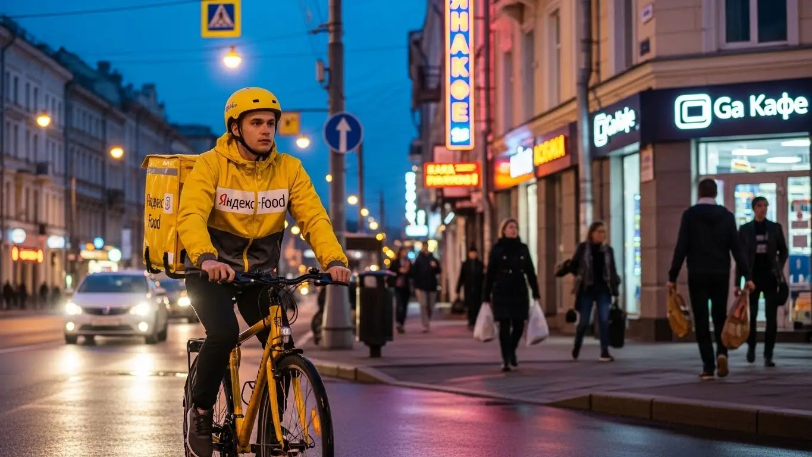
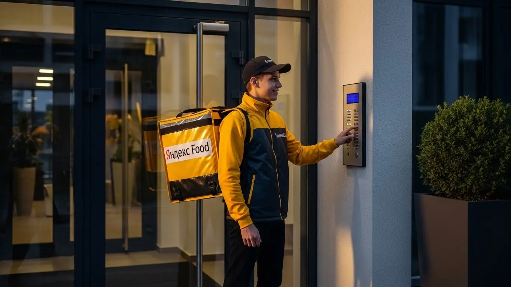

Работа курьером Яндекс Еда в Магнитогорске: доход и условия в 2025-2026

- Работа курьером Яндекс Еды в Магнитогорске: для кого эта вакансия и что вы получите
- Сколько вы будете зарабатывать курьером в Магнитогорске: калькулятор дохода и разбор выплат
- Реальный заработок курьера в Магнитогорске: смены и месячный доход
- График работы и форматы занятости
- Требования к кандидату и документы
- Самозанятость, налоги и юридическая чистота
- Пошаговое оформление и первый выход на линию в Магнитогорске
- Пешком, на вело или на авто: что выгоднее в Магнитогорске
- Районы, маршруты и «топовые» зоны заказов в Магнитогорске
- Безопасность, страховка, штрафы и оплата простоя
- Плюсы и возможные минусы работы курьером в Магнитогорске
- Реальные истории и отзывы курьеров из Магнитогорска
- Ответы на главные вопросы о работе курьером Яндекс Еды в Магнитогорске
- Короткие ответы на главные вопросы
- Заключение: твой старт в Магнитогорске
Все города
Думаешь, работа курьером в Магнитке — это просто сел на велик или в машину и поехал зарабатывать? Как бы не так. Многие смотрят на яркую рекламу, а потом удивляются, почему после дня мотаний по проспекту Ленина и убитым дорогам Левого берега в кармане остается не так много, как обещали. Боишься «убить» машину, влететь на штрафы или просто тратить время впустую, ожидая заказов? Правильно боишься. Давай сразу договоримся: я расскажу, как на самом деле устроена работа курьером Яндекс Еды в Магнитогорске, а не в какой-то там Москве.
Рекламные обещания про «золотые горы» разбиваются о суровую реальность Магнитогорска в первый же месяц, если не знать «внутрянку». Тебе не расскажут, что реальный доход — это то, что останется после вычета бензина, налогов и обеда. Не объяснят, почему заказы в Орджоникидзевском районе отличаются от Правобережного и как не остаться без денег в мёртвые часы. Большинство новичков у нас в городе наступают на одни и те же грабли, теряя и время, и деньги.
В этом гайде мы честно разберём, сколько РЕАЛЬНО можно заработать в Магнитогорске пешком, на велосипеде и на авто в 2025-2026 годах. Посчитаем чистую прибыль с учётом всех расходов. Выясним, где в городе самые «жирные» зоны и в какое время лучше выходить на линию. Если вы хотите сразу перейти к делу, то все актуальные условия и форма для быстрой заявки собраны на официальной странице про работу курьером Яндекс Еда в Магнитогорске. А мы продолжим: я покажу на примерах, как наш уральский ветер и снегопады влияют на доход, расскажу про реальные штрафы и как их не получать, и сравню условия с тем, что предлагают другие сервисы в Магнитогорске. Никакой воды — только факты и личный опыт.
Меня зовут Алексей. Я сам не один год откатал с желтым рюкзаком по Магнитогорску, а сейчас у меня свой небольшой таксопарк-партнёр. Так что я знаю эту кухню с обеих сторон — и как простой курьер, и как тот, кто подключает ребят к системе. Я видел сотни новичков, их ошибки и успехи. Хватит теории. Давай по порядку, сейчас всё разложу по полочкам, без прикрас и рекламной шелухи.
Прежде чем нырять в детали, давай быстро пробежимся по ключевым моментам в формате короткого гида по статье.
Навигатор по статье: главные вопросы о работе в Магнитке
В этой статье ты ТОЧНО узнаешь:
- Сколько РЕАЛЬНО зарабатывает курьер в Магнитогорске за смену и в месяц, с учётом расходов на бензин?
- В каких районах Магнитогорска больше всего заказов и как ловить «фиолетовые зоны» с повышенной оплатой?
- За что курьера могут оштрафовать и как работает система рейтинга, которая влияет на количество заказов?
- Что выгоднее в Магнитогорске — ходить пешком, ездить на велосипеде или работать на своей машине?
- Как правильно оформить самозанятость за 10 минут и сколько налогов придётся платить?
- Что такое «оплата простоя» и как она защищает твой доход, если заказов мало?
А если тебе некогда читать всю статью — переходи сразу к заключению, где ты найдёшь короткие ответы на все эти вопросы и указания, в каких разделах искать подробности.
А чтобы сразу было понятно, о каких цифрах идёт речь, вот наглядная инфографика по среднему доходу в Магнитогорске.
Работа курьером в Магнитогорске: ключевые цифры
Работа курьером Яндекс Еды в Магнитогорске: для кого эта вакансия и что вы получите
Давай начистоту: вакансия курьера — это не про карьеру в Газпроме, а про реальные деньги здесь и сейчас, на понятных условиях, без начальников и строгого графика. В Магнитогорске это одна из лучших возможностей для подработки или основного заработка. Ты сам решаешь, когда и сколько работать, а деньги получаешь практически сразу.
Эта вакансия в Яндекс Еде — настоящий конструктор. Ты сам собираешь свой свободный график, выбираешь район и способ передвижения. Никто не будет стоять над душой и требовать отчёты. Твой главный инструмент — смартфон с приложением «Яндекс Про», а твой доход напрямую зависит от твоего желания двигаться. Если тебе нужны быстрые деньги и свобода — это отличный шанс стать курьером.
Кому подойдёт эта работа в Магнитогорске
В доставку приходят совершенно разные люди, и для многих она становится отличным решением. Во-первых, это идеальная подработка для студентов в Магнитогорске. Пары закончились — вышел на пару часов в своём районе, заработал на карманные расходы и не нужно просить у родителей. График полностью подстраивается под учёбу.
Во-вторых, это хороший старт для тех, кто ищет работу без опыта. Требования минимальны: не нужно никаких дипломов и резюме на десять страниц, всему научат на коротком онлайн-инструктаже. Сюда часто приходят и водители, которые устали от такси или просто хотят более спокойной работы без пассажиров. И конечно, это вариант для всех, кому важна свобода: доставку можно совмещать с другой работой, фрилансом или личными делами, выходя на линию только тогда, когда удобно.
Главные преимущества для жителей районов Ленинский, Правобережный, Орджоникидзевский
Главный плюс работы курьером в Магнитогорске — возможность доставлять заказы буквально у себя под окнами. Тебе не нужно тратить час-полтора на дорогу до офиса и обратно. Живёшь, например, в Правобережном районе — можешь брать заказы оттуда, развозя еду по знакомым улицам. То же самое касается жителей Ленинского или Орджоникидзевского районов.
Представь: ты просто выходишь из подъезда, включаешь приложение «Яндекс Про» и начинаешь работать. Это экономит не только время, но и деньги на проезд. Ты отлично знаешь свой район, все короткие пути, где можно срезать через дворы. Это даёт преимущество в скорости, а значит, ты сможешь выполнить больше заказов и больше заработать.
Краткое обещание по доходу и условиям
Если говорить о деньгах, то заработок курьера в Магнитогорске — это реальные цифры. При частичной занятости, работая по 3–4 часа в день, можно спокойно получать 1000–1800 рублей за смену. Если же рассматривать доставку как основную работу и выходить на линию на 8–10 часов, то доход автокурьера может достигать 3500–4000 рублей в день, особенно в выходные или в плохую погоду. В месяц при полной занятости зарплата может составлять 60 000–85 000 рублей.
Ключевые условия работы просты и прозрачны. Во-первых, начать можно без опыта. Во-вторых, у тебя полностью свободный график — ты сам выбираешь дни и часы работы. И самое главное — это ежедневные выплаты. Заработал сегодня — сегодня же получил деньги на карту. Никаких ожиданий зарплаты по две недели.
Сколько вы будете зарабатывать курьером в Магнитогорске: калькулятор дохода и разбор выплат
Главный вопрос, который волнует любого новичка: «Сколько я буду получать?». Заработок в Яндекс Еде — это не фиксированный оклад, а сумма нескольких составляющих. Твой доход зависит от количества заказов, расстояния, спроса в конкретном районе и способа передвижения. Главное — система абсолютно прозрачна, и ты всегда видишь в приложении, за что и сколько тебе начислили.
Давай разберём по косточкам, из чего складывается твоя зарплата, и как можно прикинуть свой будущий доход. Это поможет тебе понять, на какие цифры можно ориентироваться в Магнитогорске и как на них влиять.
Из чего складывается доход курьера
Твой итоговый заработок за смену формируется из нескольких частей. Понимание этой механики поможет тебе зарабатывать больше. Все выплаты суммируются в приложении Яндекс Про.
- Оплата за заказ. Это базовая сумма за то, что ты взял и доставил заказ.
- Доплата за расстояние. Чем дальше везти заказ от ресторана до клиента, тем больше доплата. Приложение строит оптимальный маршрут, и каждый километр этого пути оплачивается.
- Повышающие коэффициенты. В часы пик (обед, ужин), в выходные или в плохую погоду спрос на доставку резко растёт. В это время на карте в «Яндекс Про» появляются зоны с повышенным спросом — это значит, что стоимость каждого заказа умножается на коэффициент.
- Бонусы. Сервис часто предлагает персональные цели. Например, выполни 15 заказов за день и получи дополнительно 500 рублей. Это отличный способ увеличить доход.
- Чаевые. Клиенты могут отблагодарить тебя за хорошую работу, оставив чаевые прямо в приложении. Они полностью твои, сервис не берёт с них комиссию.
- Оплата простоя. Если ты пришёл в ресторан, а заказ ещё не готов, включается платное ожидание. Ты не теряешь деньги из-за задержек на кухне.
- Компенсация проезда. На некоторых дальних заказах сервис может частично компенсировать расходы на общественный транспорт.
Как пользоваться калькулятором дохода
Чтобы ты мог заранее прикинуть свой потенциальный заработок, на сайте есть специальный калькулятор. Пользоваться им очень просто. Сначала выбери свой город — Магнитогорск. Затем укажи свой формат работы: пеший курьер, велокурьер или курьер на личном автомобиле.
Далее, с помощью ползунков, выбери, сколько часов в день и сколько дней в неделю ты готов работать. Калькулятор на основе средних данных по городу покажет тебе примерный диапазон твоего дохода за день и за месяц. Важно понимать, что это прогноз, а не гарантия. Твой реальный заработок будет зависеть от спроса и твоей активности, но для общего понимания это отличный инструмент.
Прикинь свой доход в Магнитогорске
8 часов
5 дней
Примерный доход в месяц:
Расчёт основан на средней ставке для Магнитогорска (~400 ₽/час). Реальный заработок зависит от спроса, бонусов и погоды.
Чтобы не только прикинуть цифры, но и сразу перейти к делу, загляни на официальную страницу про работу курьером Яндекс Еда в твоём городе. Там собраны все актуальные условия, есть ответы на вопросы и форма для быстрой заявки.
Примеры расчёта для пешего, вело- и авто‑курьера в Магнитогорске
Давай рассмотрим несколько реальных сценариев для Магнитогорска, чтобы было понятнее, сколько зарабатывает курьер.
- Пеший курьер-студент. Парень работает в центре, в районе проспекта Ленина, где много кафе и офисов. Выходит на 4 часа после учёбы 5 дней в неделю. В среднем за смену он выполняет 8–10 заказов. Его доход складывается из оплаты за заказы и небольших бонусов. В день выходит около 1200–1500 рублей. За месяц такой подработки зарплата составит 24 000–30 000 рублей.
- Велокурьер в спальных районах. Девушка активно работает по выходным в Орджоникидзевском районе, где много жилых домов и стабильный поток заказов. За 8-часовую смену на велосипеде она успевает сделать 15–20 доставок. За счёт скорости и отсутствия пробок её дневной заработок составляет 2200–2800 рублей.
- Курьер на автомобиле (полная занятость). Мужчина работает на своем авто по 8–10 часов в день, 5-6 дней в неделю. Он берёт заказы по всему городу, включая дальние доставки в разные концы Правобережного и Ленинского районов. В плохую погоду и вечерние часы он ловит высокие коэффициенты. Его средний дневной заработок — 3500–4500 рублей. В месяц доход может достигать 80 000 рублей и выше, за вычетом расходов на бензин.
Реальный заработок курьера в Магнитогорске: смены и месячный доход
Теперь к главному — к деньгам. Сколько реально можно заработать в Магнитогорске, если устроиться курьером в сервисы Яндекса? Сразу скажу: универсальной цифры нет. Твоя зарплата — это не фиксированный оклад, а результат твоей работы, умноженный на смекалку. Доход зависит от того, как ты двигаешься (пешком, на велике или на авто), сколько часов готов вкладывать и насколько грамотно используешь пиковые часы. Но конкретные ориентиры я тебе, конечно, дам.
Диапазон дохода для подработки и полной занятости
Если ты ищешь подработку на пару часов после учёбы или основной работы, цифры будут одни. Если же готов впахивать полный день, то совсем другие. В Магнитогорске расклад по доходам примерно такой.
Для подработки, выходя на линию на 2–4 часа в день, особенно в вечерние часы пик, можно рассчитывать на следующие суммы:
- Пеший курьер: В среднем 800–1500 рублей за смену. Идеально для центра, где много заказов на короткие расстояния.
- Велокурьер: За счёт скорости выходит побольше, около 1000–1800 рублей. Ты быстрее закрываешь заказы и меньше устаёшь на дистанциях в 2–3 км.
- Автокурьер: Здесь доход самый высокий — 1500–2500 рублей за короткую смену. Ты можешь брать дальние и дорогие заказы, но не забывай вычитать расходы на бензин.
При полной занятости, когда ты на линии 8–10 часов, доход растёт значительно. Это уже полноценная работа со стабильной зарплатой.
- Пеший курьер: 2000–3000 рублей в день. Физически непросто, но в районах с плотной застройкой, как в центре, вполне реально.
- Велокурьер: 2500–3800 рублей. Оптимальный вариант для спальных районов вроде Правобережного, где нужно быстро перемещаться между кварталами.
- Автокурьер: 3500–5000 рублей и выше. Это работа по всему городу, включая дальние доставки в новые микрорайоны. В плохую погоду или в дни высокого спроса можно сделать и больше.
Сравнение примерного дневного дохода в Магнитогорске
| Тип курьера | Подработка (2–4 часа) | Полная занятость (8–10 часов) |
|---|---|---|
| Пеший | 800 – 1 500 ₽ | 2 000 – 3 000 ₽ |
| На велосипеде | 1 000 – 1 800 ₽ | 2 500 – 3 800 ₽ |
| На автомобиле | 1 500 – 2 500 ₽ (до вычета топлива) | 3 500 – 5 000+ ₽ (до вычета топлива) |

Как район, время суток и погода влияют на доход
Твой заработок — это не просто плата за доставку, он постоянно меняется под влиянием трёх факторов: где, когда и в какую погоду ты работаешь. Поняв эту механику, ты сможешь значительно увеличить свой доход, работая столько же.
Во-первых, время. Самые «жирные» часы — это обеденный пик (примерно с 12:00 до 14:00) и вечерний (с 18:00 до 21:00), а также все выходные и праздничные дни. В это время люди массово заказывают еду из ресторанов, и в приложении «Яндекс Про» появляются зоны с повышенными коэффициентами — это один из главных бонусов. Заказ, который днём стоит 150 рублей, вечером может стоить уже 250–300.
Во-вторых, район. В Магнитогорске больше всего заказов генерируют центральные улицы вроде проспекта Ленина и Карла Маркса, а также районы вокруг крупных ТРЦ, таких как «Гостиный Двор» и «Континент». Вечером спрос смещается в густонаселённые спальные районы — Орджоникидзевский, Правобережный. Работая в этих зонах в правильное время, ты не будешь стоять без дела.
И в-третьих, погода. Любой дождь, снегопад или, наоборот, сильная жара — твой лучший друг. Желающих выходить на улицу становится меньше, а заказов — больше. Система автоматически повышает коэффициенты, чтобы мотивировать курьеров выйти на линию. Плюс, в плохую погоду клиенты чаще оставляют хорошие чаевые из благодарности.
Советы по увеличению заработка от опытных курьеров
Чтобы не просто работать, а именно зарабатывать, нужно подходить к делу с головой. Вот несколько проверенных советов, которые помогут тебе выжимать максимум из каждой смены и получать стабильный доход без лишних переработок.
Главное — планируй свои выходы. Не стоит выходить на линию в случайное время. Заранее смотри прогноз погоды и планируй длинные смены на дождливые или снежные дни. Всегда старайся захватывать вечерние часы и выходные — это основа твоего высокого дохода. Используй карту спроса в «Яндекс Про»: если видишь, что соседний район «горит» фиолетовым (знак высокого спроса и повышенных коэффициентов), не ленись доехать туда.
Сочетай разные подходы. Если у тебя есть и велосипед, и машина, используй их по ситуации. Для центра Магнитогорска с его пробками и плотной застройкой днём лучше подойдёт велик. А вечером или в плохую погоду садись за руль — сможешь брать дорогие заказы на большие расстояния от Яндекс Еды и Доставки, которые пешему или велокурьеру невыгодны. И не бойся отказываться от откровенно неудобных заказов, которые уводят тебя в «мёртвую» зону без обратных заказов. Иногда лучше подождать 5–10 минут в центре, чем час выбираться с окраины.
Из практики: у меня есть знакомый парень, работает на своей старенькой «четырке». Поначалу катался без разбора, в итоге за 8 часов его чистый доход был 2500–3000 рублей. Я ему посоветовал сменить тактику: выходить строго с 17:00 до 23:00, а в выходные — с обеда и до позднего вечера. И концентрироваться на доставках из ресторанов в центре в спальники на правом берегу. В первый же снежный субботний вечер он заработал почти 6000 рублей «грязными». После вычета бензина осталось больше 5000. Вот что значит работать головой.
В итоге, твой реальный заработок курьером в Магнитогорске напрямую зависит от твоего подхода. Можно просто выполнять заказы по мере их поступления, а можно анализировать спрос, погоду и районы, превращая работу в своего рода стратегию для увеличения дохода. Советую всегда следить за картой в приложении и не бояться менять локацию, если видишь более выгодную зону.
График работы и форматы занятости
Одно из главных преимуществ работы курьером — свободный график. Ты сам себе начальник и сам решаешь, когда и сколько работать. Это идеальный вариант для тех, кто не хочет сидеть в офисе с 9 до 18 или ищет возможность дополнительного заработка, который можно легко вписать в свой привычный ритм жизни. А благодаря ежедневным выплатам ты видишь результат своего труда сразу.
Подработка после учёбы или основной работы
Совмещать доставку с чем-то ещё — проще простого. Большинство ребят так и делают, ведь условия работы это позволяют. Система не требует от тебя отработать определённое количество часов в неделю, ты выходишь на линию, только когда тебе это удобно.
Вот пара реальных примеров из Магнитогорска.
- Студент МГТУ им. Носова. Учится днём, а с 18:00 до 22:00 выходит на смену на велосипеде, выполняя заказы Яндекс Еды. Катается в основном по своему Орджоникидзевскому району, развозит заказы из местных кафе и магазинов. За 4 часа спокойно делает 1500–2000 рублей. В месяц набегает 30-40 тысяч — отличная прибавка к стипендии.
- Менеджер, работает в офисе до пяти вечера. Два-три раза в будни и на выходных садится в свою машину и берёт заказы в Яндекс Доставке. В пятницу вечером, например, может поработать 3-4 часа и заработать 2000–2500 рублей. Для него это способ и отвлечься от основной работы, и покрыть расходы на бензин и обслуживание авто, ещё и сверху остаётся.
Главное — ты сам выбираешь слот в приложении «Яндекс Про» или просто нажимаешь кнопку «Начать смену», когда у тебя появляется свободное окно. Никаких согласований с начальством и объяснительных за пропуск смены.
Полная занятость: как выглядит типичный день курьера
Если ты рассматриваешь доставку как основную работу, твой день будет более структурированным, но всё равно гибким. Типичный день водителя-курьера, который работает на полную ставку, выглядит примерно так.
Выход на линию около 10-11 утра. Сначала заказов немного, можно спокойно развозить посылки из «Яндекс Маркета» или неспешные заказы из магазинов в своём районе. Ближе к 12:00 он смещается в сторону центра, на проспект Карла Маркса, где сосредоточены бизнес-центры и кафе. Начинается обеденный пик — заказы идут один за другим.
После 14:00 наступает затишье. Это время для обеда и небольшого отдыха. Можно поехать домой или просто посидеть в машине, почитать новости. Часам к 17:00 он снова в строю и едет в густонаселённый Правобережный район, готовясь к вечернему пику. С 18:00 до 21:00 — самое прибыльное время. Заказы из ресторанов, пиццерий, суши-баров. После 21:00 спрос падает, можно выполнить ещё пару заказов и к 22:00 завершать смену.
Как планировать слоты и выходы через приложение «Яндекс Про»
Весь твой рабочий процесс управляется через приложение «Яндекс Про». Это твой командный центр. Там ты видишь карту города с зонами повышенного спроса, принимаешь заказы и отслеживаешь свой доход. Грамотное планирование — ключ к стабильному заработку.
В приложении есть два формата выхода на линию: свободный выход и плановые слоты. Свободный — это когда ты просто нажимаешь кнопку и начинаешь работать в любой момент. Плановые слоты ты бронируешь заранее на определённое время и в определённой зоне. Плюс плановых слотов в том, что у тебя будет приоритет в распределении заказов, а в некоторых случаях — гарантированная минимальная оплата, даже если заказов будет мало. Это одно из важных условий работы, которое обеспечивает стабильность.
Очень важно не опаздывать на забронированные слоты. Система отслеживает твою пунктуальность, и это влияет на твой рейтинг Активности. Чем выше рейтинг, тем больше у тебя преимуществ, включая доступ к лучшим заказам и бонусам. Поэтому, если забронировал слот с 18:00 до 22:00 в Ленинском районе, постарайся быть в этой зоне ровно в 18:00 и готовым к работе.
Из практики: один новичок в моём парке поначалу игнорировал плановые слоты и выходил, когда придётся, жалуясь на малое количество заказов. Я ему показал, как за неделю вперёд забронировать самые «хлебные» вечерние слоты в зонах с высоким спросом. Его средний дневной заработок тут же вырос процентов на 30, хотя по времени он работать больше не стал.
В общем, свободный график — это не анархия, а возможность строить работу курьером вокруг своей жизни, а не наоборот. Используй инструменты планирования в «Яндекс Про» с умом, и тогда твой доход будет стабильным и предсказуемым. Главный совет — пробуй разные слоты и районы, чтобы найти свою идеальную рабочую схему в Магнитогорске.
Требования к кандидату и документы
Многих пугает слово «требования», сразу представляется отдел кадров, кипа бумаг и собеседования в три этапа. Забудь. В курьерской доставке всё проще, здесь главные условия работы — твоя адекватность, желание зарабатывать и минимальный набор документов. Система построена так, чтобы ты мог выйти на линию как можно быстрее, а не тонул в бюрократии.
Возраст, гражданство и базовые условия
Давай сразу по основным пунктам, чтобы ты не тратил время зря. Первое и самое жёсткое требование — возраст. Работать курьером в Яндекс Еде можно строго с 18 лет. Никаких исключений, даже с согласия родителей, сервис на это не пойдёт из-за материальной ответственности и формата работы.
Второе — гражданство. Подойдёт паспорт гражданина РФ или одной из стран ЕАЭС (Беларусь, Казахстан, Армения, Киргизия). Если ты гражданин ЕАЭС, понадобятся стандартные документы для легального нахождения в стране. И третье — твоя физическая форма. Никто не требует олимпийских рекордов, но ты должен понимать: работа на ногах. Пеший курьer много ходит, а велокурьер крутит педали. Если у тебя есть серьёзные проблемы со здоровьем, которые мешают долгой ходьбе или езде на велосипеде, лучше трезво оценить свои силы.
Какие документы нужны для работы курьером
Набор документов для оформления минимальный, и скорее всего, всё нужное у тебя уже под рукой. Тебе не придётся бегать по инстанциям и собирать справки неделями.
Вот полный список:
- Паспорт. Основной документ, удостоверяющий личность. Его данные понадобятся для регистрации в приложении Яндекс Про и оформления самозанятости.
- ИНН (Идентификационный номер налогоплательщика). Нужен для регистрации в качестве самозанятого. Если ты не помнишь свой номер, его за пару минут можно узнать на сайте ФНС.
- Банковская карта на твоё имя. Подойдёт карта любого российского банка. Именно на неё будут приходить заработанные деньги, ведь в сервисе ежедневные выплаты.
- Медицинская книжка. Она нужна не всегда, но я настоятельно рекомендую её сделать. Без медкнижки будет закрыта часть заказов из некоторых ресторанов и продуктовых магазинов. В Магнитогорске её можно оформить в любом аккредитованном медцентре, что расширит твои возможности и, соответственно, увеличит доход.
Как видишь, ничего сверхъестественного. Подготовь эти документы заранее, и процесс регистрации займёт у тебя от силы 15–20 минут.
Можно ли работать с 16 лет и какие есть альтернативы
Частый вопрос от молодых ребят: «Мне 16, возьмут ли меня в Яндекс Еду?». Отвечаю честно: нет, не возьмут. Как я уже сказал, минимальный возраст для работы курьером — 18 лет. Это связано с полной материальной ответственностью за заказы и необходимостью оформлять статус самозанятого, который доступен только совершеннолетним.
Какие есть варианты подработки для подростков в Магнитогорске? Классика, которая была ещё в мои времена: раздача листовок у крупных ТРЦ вроде «Гостиного двора» или «Континента». Иногда ищут помощников в небольшие кафе или на автомойки. Да, это не так технологично и гибко, как работа через приложение, но как вариант для первого заработка — вполне. Главное — не связываться с сомнительными предложениями в интернете, где обещают лёгкие деньги.
Был у меня случай: пришёл устраиваться парень, 19 лет, студент МГТУ им. Носова. Думал, что оформление — это на неделю беготни. Собрал паспорт, нашёл в телефоне реквизиты карты, ИНН загуглил за минуту. Зарегистрировался в приложении Яндекс Про прямо в машине, пока мы с ним разговаривали. Через час он уже был готов к обучению. Парень больше всего боялся, что без медкнижки не возьмут. Я ему объяснил, что начать можно и без неё, просто заказов будет чуть меньше. Через месяц он её сделал и стал брать больше слотов в центре, где много ресторанов с таким требованием.
В общем, требования к кандидату максимально лояльные. Главное — быть совершеннолетним, иметь гражданство РФ или ЕАЭС и базовый пакет документов. Советую сразу озаботиться медкнижкой, чтобы не ограничивать свой потенциальный доход.
Самозанятость, налоги и юридическая чистота
Многих отпугивают слова «налоги», «самозанятость», «официально». Кажется, что это сложно, муторно и вообще «государство хочет меня обобрать». На деле же формат самозанятости — это, пожалуй, лучшее, что придумали для тех, кто работает в доставке или такси. Это простой способ работать легально, спать спокойно и не забивать голову бухгалтерией.
Почему курьеры Яндекс Еды работают как самозанятые
Самозанятость, или налог на профессиональный доход (НПД), — это специальный налоговый режим. Ты не становишься индивидуальным предпринимателем (ИП), не сдаёшь декларации и не ведёшь отчётность. Ты просто регистрируешься в приложении и легально получаешь доход от компаний.
Для курьера это идеальный вариант по нескольким причинам. Во-первых, это официально. Твой доход «белый», ты можешь при необходимости взять кредит или подтвердить свой заработок. Во-вторых, это просто. Вся работа с налогами ведётся через смартфон, никаких походов в налоговую. В-третьих, это даёт свободу. Ты не сотрудник в штате с жёстким графиком, а партнёр сервиса. Именно статус самозанятого позволяет тебе самому выбирать, когда и сколько работать, и получать ежедневные выплаты.
Как за 10 минут оформить самозанятость через «Мой налог»
Процесс регистрации элементарный и занимает не больше 10 минут. Никаких госпошлин и очередей.
Вот пошаговая инструкция:
- Скачай приложение «Мой налог». Оно есть в Google Play и App Store. Это официальное приложение от Федеральной налоговой службы (ФНС).
- Начни регистрацию. Самый простой способ — по паспорту РФ. Отсканируй главный разворот паспорта прямо через камеру в приложении. Система сама распознает все данные.
- Сделай селфи. Приложение попросит тебя сфотографироваться. Это нужно для подтверждения личности, чтобы никто не смог зарегистрироваться по твоим документам.
- Подтверди регистрацию. Приложение отправит данные на проверку в ФНС. Обычно это занимает от пары минут до часа. Как только придёт подтверждение — всё, ты самозанятый.
Весь процесс интуитивно понятен. Если что, в приложении Яндекс Про тоже есть подсказки, которые проведут тебя по всем шагам.
Сколько и как платить налоги
Теперь самое интересное — деньги. Ставка налога для самозанятого курьера, который работает с юридическими лицами (а Яндекс — это юрлицо), составляет 6% от дохода. Не 13%, как НДФЛ при работе по трудовому договору, а именно 6%.
Процесс уплаты налога полностью автоматизирован. Тебе не нужно ничего считать самому. Яндекс передаёт данные о твоих выплатах в налоговую. В начале каждого месяца в приложении «Мой налог» формируется квитанция с суммой налога за предыдущий месяц. Тебе остаётся только оплатить её до 28-го числа. Это можно сделать прямо в приложении, привязав банковскую карту. Всё происходит в два клика.
Работать «всерую» за наличку — это постоянный риск. Могут не заплатить, могут обмануть. Здесь же всё прозрачно: ты видишь каждый рубль своего дохода в Яндекс Про, получаешь ежедневные выплаты на карту и платишь небольшой, понятный налог. Это даёт уверенность и финансовую стабильность.
У меня в парке есть водитель, ему под 50, всю жизнь работал на стройках за «серый» нал. Когда я ему предложил попробовать автокурьером и объяснил про оформление самозанятости, он сначала отмахивался: «Лёш, да какие налоги, я в этом ничего не понимаю». Мы сели с ним, скачали приложение, за 7 минут его зарегистрировали. Через месяц ему пришёл налог — около 2000 рублей с заработка в 35 тысяч. Он оплатил его с карты прямо в телефоне и был удивлён, насколько всё просто. Теперь говорит, что впервые в жизни работает спокойно, не боясь, что его «кинут» с зарплатой.
Так что не бойся этого статуса. Это современный, простой и легальный способ работать. Ты получаешь все плюсы официального дохода без минусов в виде сложной отчётности и походов по инстанциям. Для курьера — идеальный формат.
Пошаговое оформление и первый выход на линию в Магнитогорске
Многие думают, что стать курьером в Яндекс — это долгая история с бумажками и собеседованиями. На деле всё гораздо проще: система заточена на то, чтобы ты начал зарабатывать как можно скорее. Весь процесс от заполнения анкеты до первого заказа в Магнитогорске может занять меньше одного дня, если подойти к делу собранно. Это отличный вариант как для подработки, так и для основного источника дохода.
Шаг 1–2: анкета и онлайн‑обучение
Первый этап — простая анкета на сайте. Ничего сложного: ФИО, дата рождения, гражданство и номер телефона. Указывай реальные данные, так как дальше будет проверка документов. После отправки анкеты тебе на телефон придёт ссылка на короткое онлайн-обучение. Это не экзамен, а несколько коротких видео и тестов прямо в приложении.
Тебе объяснят базовые вещи: как пользоваться приложением «Яндекс Про», принимать и завершать заказы от сервисов Яндекс Еда и Доставка, как общаться с клиентами и поддержкой. Также расскажут про основные правила безопасности. Посмотри всё внимательно, чтобы потом не допускать ошибок на линии. Вся процедура занимает от 30 минут до часа, и пройти её можно где угодно.
Шаг 3: получение сумки и доступа к заказам в Магнитогорске
Когда обучение пройдено, а документы проверены, нужно получить главный рабочий инструмент — фирменную термосумку или термокороб. Без него система не даст доступ к заказам из ресторанов и магазинов. В Магнитогорске экипировку можно забрать в офисах партнёров сервиса. Не нужно искать их по всему городу — актуальные адреса и время работы всегда есть в приложении «Яндекс Про».
Просто выбираешь ближайшую точку, приезжаешь, показываешь свой профиль в приложении, и тебе выдают сумку. Иногда её могут даже доставить на дом. Как только ты получишь термокороб и отметишь это в приложении, твой аккаунт полностью активируют, и на карте появятся доступные для работы зоны и заказы.
Шаг 4: первый слот и первый доход
Всё, ты готов к работе. Открывай «Яндекс Про», смотри на карту Магнитогорска и выбирай свой первый слот — это запланированный отрезок времени для работы со свободным графиком. Для начала советую взять короткий слот на 3–4 часа и выбрать свой район, где ты знаешь каждую улицу. Так будет спокойнее, и ты быстрее сориентируешься с первым заказом.
Как только твой слот начнётся, приложение предложит первый заказ. Принимаешь, следуешь по маршруту, забираешь посылку и отвозишь клиенту — всё интуитивно понятно. Деньги за выполненные заказы и бонусы появятся на балансе в приложении почти сразу. Сервис предлагает ежедневные выплаты, так что вывести средства на карту можно будет уже в этот же день или на следующий.
Вот реальный пример. Парень из Правобережного района заполнил анкету утром в понедельник. Пока пил кофе, прошёл обучение. Днём съездил в офис партнёра на проспекте Ленина за термосумкой. Вечером того же дня вышел на 4-часовой слот в своём районе, выполнил 7 заказов и заработал первые 1100 рублей. Всё за один день.
В итоге, весь процесс от анкеты до первых денег максимально упрощён, и начать можно без опыта. Главное — иметь под рукой паспорт и ИНН, чтобы не затягивать проверку, и быть готовым сразу выйти на линию.
Пешком, на вело или на авто: что выгоднее в Магнитогорске
Выбор транспорта — это не просто вопрос удобства, а твой главный инструмент, который напрямую влияет на скорость, количество заказов и итоговый заработок. В Магнитогорске, с его чётким делением на районы и немалыми расстояниями, у каждого формата есть свои сильные и слабые стороны. Выбирать нужно с умом, исходя из своих целей и возможностей.
Пеший курьер: для центра и плотной застройки в Магнитогорске
Если у тебя нет машины или велосипеда или ты просто ищешь подработку на пару часов в день, формат пешего курьера — отличный старт. Он идеально подходит для центральной части города, особенно для Ленинского района. Здесь, в кварталах вокруг проспекта Ленина, улицы Гагарина и проспекта Металлургов, сосредоточено огромное количество кафе, ресторанов и офисов — основные источники заказов Яндекс Еды.
Расстояния между точками А (ресторан) и Б (клиент) часто не превышают 1–1,5 км. Пешком ты не зависишь от пробок, которые в час пик бывают и на центральных улицах, и не нужно искать место для парковки. Это идеальный вариант для коротких слотов во время обеденного перерыва (с 12:00 до 15:00) и вечернего пика (с 18:00 до 21:00).
Велокурьер: быстрые доставки между спальными районами
Велосипед — это золотая середина. Ты уже не пешеход, но ещё не водитель с его расходами на бензин. Для Магнитогорска это очень выгодный вариант, особенно для работы в крупных спальных районах. Например, в 144-м микрорайоне или в новых Южных кварталах, где много многоэтажек и локальных торговых точек.
Как велокурьер, ты легко преодолеваешь 3–5 километров, объезжая любые заторы на проспекте Карла Маркса или улице Советской. Это позволяет брать больше заказов и работать на стыке районов, например, между Правобережным и Орджоникидзевским. Плюс, это отличная физическая нагрузка — по сути, тебе платят за то, что ты крутишь педали. Главное — быть готовым к уральской погоде.
Водитель‑курьер: заказы по всему городу и пригороду Агаповка, Верхнеуральск
Работа курьером на своем авто — это высшая лига, особенно в таком растянутом городе, как Магнитогорск. На машине тебе доступны самые дорогие и дальние заказы: доставка из гипермаркетов вроде «Ленты» или «METRO», заказы из одного конца города в другой, а также выезды в пригородные посёлки — Агаповку, Поселок Западный и даже Верхнеуральск.
В плохую погоду — будь то снегопад зимой или ливень летом — спрос на автодоставку взлетает, а вместе с ним и коэффициенты. Ты сидишь в тепле, слушаешь музыку и спокойно развозишь заказы. Автомобиль даёт возможность работать полные смены по 8–10 часов и забирать самые крупные и тяжёлые заказы, которые другим недоступны. Да, есть расходы на бензин и амортизацию, но при грамотном подходе они с лихвой окупаются высоким доходом.
Сравнение форматов доставки в Магнитогорске
| Параметр | Пеший курьер | Велокурьер | Водитель-курьер |
|---|---|---|---|
| Зоны работы | Центр (Ленинский район), плотная застройка | Спальные районы (144 мкрн, Южные кварталы), соседние кварталы | Весь город, пригород (Агаповка, Поселок Западный) |
| Типичные заказы | Еда из ресторанов, документы, мелкие посылки | Еда, небольшие покупки из магазинов | Крупные заказы из гипермаркетов, дальние доставки, несколько заказов сразу |
| Расходы | Минимальные (проезд на транспорте до зоны) | Обслуживание велосипеда | Бензин, амортизация авто, страховка |
| Главное преимущество | Независимость от пробок, низкий порог входа | Скорость, маневренность, экономия | Комфорт, дальность, высокий доход, работа в любую погоду |
Мой знакомый, водитель-курьер на старенькой «десятке», выработал для себя чёткую стратегию. В будни он берёт вечерние слоты и работает в Орджоникидзевском районе, развозя ужины. А в выходные, особенно если погода плохая, он берёт длинную смену на 10 часов, закупается термосами с чаем и работает по всему городу, уделяя особое внимание крупным заказам из ТРЦ «Гостиный Двор» и «Континент». В одну из таких снежных субботних дней его чистый доход за смену, за вычетом бензина, составил около 4500 рублей.
В итоге, выбор за тобой. Для подработки и поддержания формы — бери велосипед или ходи пешком в центре. Если же ты нацелен на максимальный и стабильный заработок, то в условиях Магнитогорска без машины не обойтись. Начинай с того, что есть, а дальше посмотришь — возможно, заработав на доставках, ты как раз и купишь себе авто для работы.
Районы, маршруты и «топовые» зоны заказов в Магнитогорске
Знать город — это половина успеха в нашей работе. Можно бездумно кататься по всему Магнитогорску, сжигая бензин и время, а можно работать с умом, находясь там, где заказы есть всегда. Деньги в доставке зарабатывают не те, кто больше всех ездит, а те, кто лучше всех планирует. Давай разберёмся, где в нашем городе самые «рыбные» места.
Где больше всего заказов: ТРЦ, бизнес‑центры и туристические места
Самый стабильный поток заказов, особенно в обед и по вечерам, идёт из крупных торговых центров. Там сосредоточены фуд-корты, рестораны и магазины, которые активно пользуются услугами Яндекс Доставки. В Магнитогорске в первую очередь обрати внимание на ТРК «Гостиный двор» и ТРК «Континент». В этих зонах почти всегда горит фиолетовый цвет на карте спроса в приложении Яндекс Про, а это значит, что действуют повышающие коэффициенты к стоимости заказа.
Днём в будние дни хороший спрос генерируют деловые кварталы. В нашем городе это в основном центральные проспекты — Ленина и Карла Маркса, где много офисов. Сотрудники заказывают бизнес-ланчи, документы, мелкие посылки. Вечерами и в выходные центр тоже не пустует: люди гуляют и заказывают еду через Яндекс Еду из центральных кафе. Не стоит сбрасывать со счетов и парковые зоны в хорошую погоду — заказы могут прилетать прямо туда.

Работа в своём районе: примеры для популярных жилых кварталов
Многие думают, что зарабатывать можно только в центре, но это не так. Работать в своём районе часто бывает даже выгоднее, особенно если ты пеший курьер или велокурьер. Ты экономишь время и деньги на дорогу до «топовой» зоны, отлично знаешь все дворы, подъезды и короткие пути. В Магнитогорске достаточно заказов в крупных спальных районах, например, в южной части Правобережного района или в 140-х микрорайонах.
В этих кварталах полно не только жилых домов, но и небольших кафе, суши-баров, пиццерий и магазинов у дома, которые подключены к сервисам Яндекса. Такие заказы, может, и не такие дорогие, как из центрального ресторана, но их много, и они короткие. За час можно успеть сделать 3–4 доставки в радиусе пары километров от дома, что в итоге принесёт хороший доход без лишней суеты и пробок.
Как выбирать зоны и слоты в «Яндекс Про», чтобы не мотаться впустую
Приложение Яндекс Про — твой главный инструмент для планирования. Основное, на что нужно смотреть, — это карта спроса. Зоны, окрашенные в фиолетовый или сиреневый цвет, — это места, где заказов сейчас больше, чем свободных курьеров. За доставку из такой зоны твой доход будет выше за счёт доплаты — того самого повышающего коэффициента. Перед началом смены всегда смотри на карту и старайся находиться в таких зонах или рядом с ними.
Не гоняйся за одним заказом через весь город, даже если у него высокий коэффициент. Пока ты доедешь до точки, а потом вернёшься, потеряешь много времени. Лучше выбрать зону со стабильно высоким спросом и работать внутри неё. Система часто предлагает «цепочку заказов», когда ты забираешь новый заказ недалеко от места, где отдал предыдущий. Это самый эффективный способ работы, который экономит и время, и топливо.
Из своей практики скажу: один знакомый курьер на автомобиле поначалу мотался по всему городу за каждой «фиолетовой» зоной. В итоге за 8-часовую смену проезжал по 150 км, а чистыми выходило не так уж и много из-за расхода на бензин. Потом он сменил тактику: стал работать только в Правобережном районе, курсируя между ТРК «Континент» и жилыми кварталами. Пробег сократился до 80–90 км, а чистый доход вырос на 15–20%, потому что он перестал тратить время на пустые перегоны.
В общем, ключ к хорошему заработку курьера — это анализ карты в приложении и грамотное планирование маршрутов. Не ленись изучать город и находить свои, самые выгодные зоны для работы.
Безопасность, страховка, штрафы и оплата простоя
Работа курьера — это не только заработок, но и ответственность. Ты постоянно в движении, на дороге, взаимодействуешь с людьми. Поэтому важно говорить не только о деньгах, но и о безопасности, правилах и гарантиях. Сервис со своей стороны даёт инструменты защиты, но и от тебя требуется внимательность и соблюдение стандартов.
Бесплатная страховка на сменах и что она покрывает
Один из самых важных моментов, о котором многие новички даже не знают: пока ты на активном заказе на плановом слоте, твоя жизнь и здоровье застрахованы сервисом. Это абсолютно бесплатно для курьера, все расходы берёт на себя Яндекс. Страховка покрывает несчастные случаи, которые могут произойти во время доставки: попал в ДТП, упал с велосипеда на скользкой дороге, получил другую травму.
Сумма покрытия доходит до 2 миллионов рублей, в зависимости от тяжести случая. Конечно, лучше, чтобы это никогда не пригодилось, но само наличие такой страховки даёт уверенность. Ты понимаешь, что в сложной ситуации не останешься один на один с проблемой. Главное — при любом происшествии сразу же сообщить о случившемся в службу поддержки через приложение.
Правила безопасности на дороге и при доставке
Банальные вещи, о которых нельзя забывать. Если ты пеший курьер, переходи дорогу только по пешеходному переходу, в тёмное время суток носи светоотражающие элементы — они есть на форме и сумке. Для велокурьера шлем и фонари (передний и задний) — обязательны. Не гоняй по тротуарам, распугивая прохожих, соблюдай ПДД.
Если ты курьер на автомобиле, то тут всё как в такси: не превышай скорость, не отвлекайся на телефон (используй держатель), паркуйся аккуратно, чтобы не мешать другим и не получать штрафы. В плохую погоду — дождь, снегопад, гололёд, которые в Магнитогорске не редкость, — снижай скорость вдвое. Лучше опоздать на 5 минут и предупредить клиента, чем попасть в аварию. Аккуратность важна и с самим заказом: не тряси термокороб, ставь его на ровную поверхность, чтобы ничего не пролилось и не помялось.
Какие бывают штрафы и как их избежать
Да, в сервисе есть система штрафов. Но это скорее не способ отобрать у тебя деньги, а механизм для поддержания высокого качества сервиса Яндекс Еды для клиентов. Штрафы, как правило, применяют за серьёзные и систематические нарушения условий работы. Например, за грубость клиенту или сотруднику ресторана, за порчу заказа из-за небрежного обращения, за регулярные опоздания на начало слота или за отмену уже принятого заказа без веской причины.
Избежать их просто: будь вежлив, аккуратен и пунктуален. Если понимаешь, что опаздываешь в ресторан или к клиенту из-за пробки или долгого ожидания заказа, — напиши в чат поддержки. Они зафиксируют проблему, и к тебе не будет претензий. Большинство конфликтных ситуаций можно решить через диалог с поддержкой. За несколько лет работы я видел очень мало случаев, когда курьера штрафовали несправедливо. Обычно всё по делу.
Что такое оплата простоя и как она защищает ваш доход
Это, пожалуй, одно из ключевых преимуществ работы с Яндексом, которое защищает твой доход. Оплата простоя (или гарантированный доход) — это механизм, который гарантирует тебе минимальную оплату за час, даже если заказов в это время было мало или не было совсем. Работает это на плановых слотах. Ты выбираешь слот, выходишь на линию в указанную зону, и если система не даёт тебе заказы, твоё время всё равно оплачивается по минимальной ставке.
Это очень важная страховка от неудачного дня. Ты можешь быть уверен, что если выделил на работу 4 часа, то получишь за них определённый минимум, а не просидишь это время бесплатно. Такой гарантии нет во многих других сервисах доставки, где платят строго за выполненный заказ. Здесь же сервис показывает, что ценит твоё время, и это позволяет более стабильно планировать свой заработок.
Был у меня случай с парнем, который только начинал. Он боялся брать утренние слоты в будни, думал, что заказов не будет и он зря потратит время. Я посоветовал ему взять плановый слот с гарантией. В итоге за первые два часа ему упало всего три коротких заказа. Но по итогу смены он увидел в приложении доплату, которая довела его часовой заработок до обещанного минимума. Это сняло его страхи, и он начал работать более уверенно.
Итак, безопасность — это твоя личная ответственность, подкреплённая страховкой от сервиса. Штрафов можно легко избежать, если соблюдать условия работы. А финансовую стабильность даже в «тихие» часы обеспечивает система оплаты простоя.
Плюсы и возможные минусы работы курьером в Магнитогорске
Как и в любой профессии, здесь есть свои плюсы и минусы. Я всегда говорю парням честно: это не лёгкие деньги, но это честные и быстрые деньги, если подходить к делу с умом. Важно заранее взвесить все условия работы, чтобы потом не было разочарований. В Магнитогорске своя специфика: город компактный, но с характером, и это влияет на доставку.
Давай разберём по полочкам, что тебя ждёт. С одной стороны — свободный график и ежедневные выплаты. С другой — уральская погода и необходимость постоянно быть в движении. Понимание этого баланса — ключ к тому, чтобы работа курьером приносила не только доход, но и удовлетворение.
Вот недавний пример из практики. Парень, курьер на автомобиле, назовём его Сергей, вышел на смену в жуткий снегопад, когда многие решили отсидеться дома. Ездил он в основном по правому берегу, где чистят получше. Да, было сложно, медленно, но заказов от Яндекс Еды и Доставки было море, а коэффициенты горели фиолетовым. За 6 часов он сделал почти 4000 рублей — столько в обычный день он зарабатывает за 8-9 часов. Он рискнул, подготовил машину и сорвал куш. Это и есть главный принцип: сложности здесь часто превращаются в возможности для дополнительного заработка.
В общем, работа курьером в Яндексе — это не для всех, но для многих она становится отличным решением. Главное — понимать, на что идёшь, и быть готовым к разным ситуациям. Если ты активен и ценишь независимость, скорее всего, тебе понравится.
Сильные стороны работы курьером в Магнитогорске
Самый главный плюс, из-за которого многие хотят стать курьером, — это свободный график. Ты сам решаешь, когда выходить на линию и сколько часов работать. Можно сделать доставку основной работой и выходить на 8–10 часов в день, а можно использовать как подработку после учёбы или основной занятости, выполняя заказы по 3–4 часа вечером. Никто не стоит над душой с планом и не отчитывает за опоздания, если ты сам не запланировал слот.
Второй жирный плюс — ежедневные выплаты. Заработал сегодня — получил сегодня. Не нужно ждать аванса и зарплаты по две недели. Для многих это решающий фактор: можно быстро закрыть финансовую дыру или просто иметь живые деньги на кармане каждый день. Оформление через самозанятость делает доход официальным, а налоги платятся автоматически через приложение.
Кроме того, ты не привязан к офису. Можно выбрать район рядом с домом и доставлять заказы в знакомых кварталах, экономя время и деньги на дорогу. Сервис Яндекс также обеспечивает поддержку: есть круглосуточный чат, куда можно обратиться с любым вопросом, и бесплатная страховка жизни и здоровья на время выполнения заказов. Это даёт уверенность, что в сложной ситуации ты не останешься один.
С какими сложностями чаще всего сталкиваются курьеры
Буду честен, работа курьером не всегда сахар. Первая и главная сложность — физическая нагрузка, особенно для пеших курьеров и велокурьеров. Целый день на ногах или в седле — это требует выносливости. Поначалу могут болеть ноги и спина, но со временем организм привыкает. Главное — удобная обувь и одежда, а также не забывать делать короткие перерывы.
Вторая сложность, особенно актуальная для Магнитогорска, — это погода. Уральский климат непредсказуем: летом может быть жара, а зимой — метель и мороз под -30°C. Работать в таких условиях тяжело. Но есть и обратная сторона: в плохую погоду всегда включаются повышающие коэффициенты, заказов больше, а чаевых оставляют чаще. Совет простой: качественная экипировка решает. Хорошая непромокаемая куртка, термобельё и правильная обувь — это не расходы, а инвестиции в свой комфорт и заработок.
Иногда бывают простои, когда заказов мало. Обычно это случается в середине буднего дня. В такие моменты важно не паниковать, а переместиться в зону повышенного спроса — её всегда видно на карте в приложении Яндекс Про. И конечно, нужно быть готовым к общению с людьми. Клиенты бывают разные: кто-то вежлив и оставит чаевые, а кто-то может быть недоволен. Важно сохранять спокойствие, быть профессионалом и не принимать негатив на свой счёт.
Кому такая работа подходит, а кому лучше поискать другой формат
Эта работа идеально подходит активным и самостоятельным людям, которые не любят сидеть на одном месте. Если ты ценишь свободу, не хочешь зависеть от начальника и жёсткого графика, то тебе здесь понравится. Это отличный вариант для студентов, которым нужна подработка, или для тех, кто ищет вакансии без опыта. Также формат подойдёт водителям, которые хотят, чтобы их автомобиль приносил стабильный доход без заморочек с поиском пассажиров.
С другой стороны, если ты ищешь максимальной стабильности и не любишь физическую активность, лучше поискать что-то другое. Тем, кто предпочитает спокойную работу в офисе с фиксированным окладом, деятельность курьера может показаться слишком хаотичной. Если тебя выбивает из колеи плохая погода или необходимость общаться с незнакомыми людьми, этот формат тоже вряд ли принесёт удовольствие.
Нужно трезво оценивать свои силы и характер. Работа курьером требует определённой самодисциплины, чтобы выходить на линию и зарабатывать, а не сидеть дома. Если ты готов к движению и самостоятельности, то сможешь получать хороший доход и удовольствие от процесса.
Реальные истории и отзывы курьеров из Магнитогорска
Теория — это хорошо, но лучше всего об условиях работы говорят реальные отзывы курьеров, которые каждый день выходят на линию в Магнитогорске. У каждого своя история, свой подход и свои фишки. Кто-то делает упор на скорость, кто-то — на определённые часы, а кто-то просто работает в своём районе.
Эти короткие истории помогут тебе лучше понять, как всё устроено изнутри. Это не выдуманные персонажи, а собирательные образы парней, с которыми я постоянно общаюсь. Их опыт — лучшее доказательство того, что при правильном подходе заработать может каждый, даже без опыта работы.
В конечном счёте, твой заработок и комфорт зависят от того, насколько грамотно ты выстроишь свой рабочий процесс. Кто-то находит себя в быстрых доставках на велосипеде по центру, а кому-то выгоднее развозить заказы на машине по всему городу. Главное — найти свой стиль.
История студента МГТУ им. Носова, который совмещает учёбу и доставку
«Меня зовут Артём, я учусь на третьем курсе в "политехе". Живу в общежитии в Ленинском районе, оттуда и начинаю работать. График у меня простой: после пар, примерно с 16:00, выхожу на 4-5 часов. Иногда, если нет "окон", беру утренние слоты. Я — пеший курьер в Яндекс Еде, это не требует никаких вложений. В основном доставляю заказы в радиусе пары километров от вуза — здесь много кафе и жилых домов.
В среднем за вечер выходит 1200–1500 рублей. В выходные стараюсь работать подольше, часов по 6-7, тогда и заработок больше. За неделю набегает около 8-10 тысяч рублей. Этих денег мне с головой хватает на жизнь, и не нужно просить у родителей. Главный плюс — я сам строю свой график. Если завал с учёбой, просто не беру смены. Для студента это идеальный вариант подработки».
Опыт автокурьера, который выходит в пиковые часы
«Я работаю на основной работе посменно, поэтому у меня много свободных вечеров и дней. Решил, что машина не должна простаивать, и стал курьером на своем авто в Яндекс. Моя стратегия — выходить только в самые "жирные" часы: с 18:00 до 22:00 в будни и почти весь день в субботу и воскресенье. В это время всегда есть повышающие коэффициенты и много заказов от Еды и Доставки.
Езжу по всему городу, но больше всего нравится правый берег — Орджоникидзевский и Правобережный районы. Там меньше пробок и больше заказов из крупных ТЦ вроде "Гостиного Двора" или "Континента". За вечерний слот в 4 часа мой доход составляет 1800–2500 рублей чистыми, уже за вычетом бензина. В выходной день могу и 5000 рублей сделать. Меня такой формат полностью устраивает: я не устаю, как на полной занятости, но при этом получаю ощутимую прибавку к основной зарплате».
Мнение пешего или вело‑курьера о работе в центре и спальниках
«Я работаю велокурьером уже второй сезон. Поначалу доставлял только в центре, в районе проспекта Ленина и Карла Маркса. Плюсы очевидны: заказы сыпятся один за другим, расстояния короткие, ресторанов на каждом шагу. Но есть и минусы: много людей, сложно найти место для парковки, а на некоторых участках приходится спешиваться.
Потом попробовал работать в спальных районах, например, в южной части города, в 140-х микрорайонах. Там своя специфика. Заказов чуть меньше, но и суеты никакой. Ездишь по знакомым дворам, клиенты — в основном семьи. Расстояния между точками могут быть больше, но зато нет светофоров и толп. В итоге по деньгам выходит примерно то же самое, но работать в спальниках мне психологически комфортнее. Привыкнуть пришлось к тому, что иногда нужно поднимать заказ на высокий этаж в доме без лифта, но это часть условий работы».
Ответы на главные вопросы о работе курьером Яндекс Еды в Магнитогорске
Собрал здесь ответы на самые частые вопросы новичков про условия работы. Без лишних слов, только суть, чтобы у тебя не осталось сомнений.
Ответы на ключевые вопросы кандидатов
Нужно ли оформлять самозанятость и как платить налоги?
Да, работа курьером в Яндекс Еде требует оформления самозанятости. Не пугайся этого, всё проще, чем кажется. Регистрация занимает 10 минут через приложение «Мой налог» — нужен только паспорт. Это твой официальный статус, который подтверждает доход и позволяет работать легально.
Налог для самозанятого — 6% с поступлений от юридических лиц, то есть от Яндекса. Никаких деклараций и бухгалтеров: приложение «Яндекс Про» само передаёт данные в налоговую, а «Мой налог» раз в месяц присылает квитанцию. Оплатил в пару кликов — и работаешь спокойно. Это гораздо надёжнее любых «серых» схем.
Какой телефон и интернет нужны для работы курьером?
Для работы понадобится смартфон на базе Android версии 7.0 или новее. На айфонах приложение «Яндекс Про» для курьеров не работает, имей это в виду. Телефон должен уверенно держать зарядку, а GPS — точно определять твоё местоположение.
Интернет нужен стабильный, мобильный, так как заказы, карты и связь с поддержкой идут через него. Мой тебе совет: сразу купи пауэрбанк. Приложение активно использует геолокацию и постоянно включённый экран, поэтому батарея садится быстро. Лучше быть готовым, чем остаться без связи на середине маршрута.
Что будет, если в смену мало заказов — как работает оплата простоя?
Это одно из главных преимуществ Яндекса. Если ты вышел на запланированный слот (заранее выбрал время и район работы), а заказов мало, ты не будешь сидеть бесплатно. Сервис гарантирует минимальную оплату за час. Если твой заработок с заказов за это время окажется ниже установленной планки, Яндекс доплатит разницу.
Эта система защищает твой доход. Ты можешь быть уверен, что твоё время на линии будет оплачено, даже если спрос временно упадёт. В других сервисах такого часто нет: нет заказов — нет денег. Здесь твои риски застрахованы.
Есть ли в Яндекс Еде штрафы и за что их могут применить?
Давай по-честному: система штрафов есть, но это скорее система мотивации для поддержания качества сервиса. Штрафы применяют не за мелочи, а за серьёзные нарушения. Например, если ты сильно опоздал на слот без предупреждения, повредил заказ по своей вине, был груб с клиентом или отменил уже принятый заказ без веской причины.
Главное правило — работать на совесть и быть на связи с поддержкой. Если что-то пошло не так (проколол колесо, попал в пробку), сразу пиши в чат. Адекватное поведение и соблюдение простых правил — лучшая защита от любых штрафов. За несколько лет работы я не получал их ни разу, потому что просто делал свою работу нормально.
Что делать, если я повредил заказ или попал в ДТП?
Без паники. Главное — твоя безопасность. Если случилось ДТП, сначала убедись, что ты в порядке. Сразу после этого — и в случае с повреждённым заказом тоже — пиши в службу поддержки через приложение «Яндекс Про». Опиши ситуацию, сделай фото, если нужно. Поддержка на связи 24/7 и подскажет, что делать дальше. Не пытайся решить проблему с клиентом или рестораном сам — для этого и существует поддержка. А на время смены действует страховка, так что ты защищён.
Сколько реально можно заработать курьером в Магнитогорске и чем эта вакансия лучше других сервисов?
В Магнитогорске при полной занятости (8–10 часов в день) автокурьер может стабильно зарабатывать 3000–4000 рублей за смену, а пеший или велокурьер — 2000–2800 рублей. Если нужна подработка на 4 часа вечером, рассчитывай на 1000–1500 рублей. В месяц при полной занятости доход выходит 60 000–80 000 рублей и даже больше, если работать в пиковые часы и выходные.
Главное отличие от других сервисов в Магнитогорске — это масштаб. Яндекс Еда — это не только рестораны, но и доставка из магазинов и Яндекс Маркета, что даёт стабильный поток заказов. Плюс, как я уже говорил, есть оплата простоя и бесплатная страховка на время смен. А технологичная платформа «Яндекс Про» сама строит маршруты и предлагает заказы так, чтобы ты зарабатывал больше.
Можно ли работать без опыта и что будет на обучении?
Конечно, опыт работы не требуется. Большинство курьеров приходят с нуля, и это нормально. Тебе не нужно знать город наизусть или иметь опыт в логистике. Главное — желание работать и ответственность.
Всё обучение — это короткий онлайн-инструктаж и тест в приложении, которые займут не больше часа. Тебе расскажут об основных правилах сервиса, как пользоваться приложением «Яндекс Про», как общаться с клиентами и что делать в нестандартных ситуациях. Всё просто и по делу, чтобы ты мог как можно быстрее выйти на линию и начать зарабатывать.
Берут ли с 16–17 лет и какие есть ограничения по возрасту?
Здесь всё строго. Для работы курьером в Яндекс Еде, неважно, пешим, на велосипеде или на авто, тебе должно быть полных 18 лет. Это связано с необходимостью оформления статуса самозанятого и полной материальной ответственностью.
Никаких исключений для 16-летних или 17-летних, даже с согласия родителей, сервис не делает. Поэтому, если тебе ещё нет 18, придётся немного подождать или поискать другие варианты подработки, доступные для твоего возраста.
Короткие ответы на главные вопросы
Собрал здесь краткую шпаргалку по самым важным моментам статьи. Если что-то забудешь — заглядывай сюда.
Шпаргалка по статье: короткие ответы на главные вопросы
Короткие ответы на ключевые вопросы
Сколько РЕАЛЬНО зарабатывает курьер в Магнитогорске за смену и в месяц, с учётом расходов на бензин?
При полной занятости автокурьер может получать 3500–5000 ₽ в день (60 000–85 000 ₽ в месяц), велокурьер — 2500–3800 ₽. Для подработки на 3-4 часа доход составляет 1000–1800 ₽. Заработок сильно зависит от погоды, времени суток и выбранного района.
→ Подробнее читай в разделе «Реальный заработок курьера в Магнитогорске: смены и месячный доход».В каких районах Магнитогорска больше всего заказов и как ловить «фиолетовые зоны» с повышенной оплатой?
Больше всего заказов в центре (проспекты Ленина и Карла Маркса) и у крупных ТРЦ, таких как «Гостиный двор» и «Континент». Чтобы ловить повышенные коэффициенты, следите за картой спроса в приложении «Яндекс Про» в пиковые часы (обед и вечер) и в плохую погоду.
→ Подробнее читай в разделе «Районы, маршруты и «топовые» зоны заказов в Магнитогорске».За что курьера могут оштрафовать и как работает система рейтинга, которая влияет на количество заказов?
Штрафы (депремирование) применяют за серьёзные нарушения: грубость, порчу заказа или регулярные опоздания на забронированные слоты. Рейтинг Активности снижается за пропуски и отмены заказов, что уменьшает приоритет при их распределении. Чтобы этого избежать, будьте пунктуальны и на связи с поддержкой.
→ Подробнее читай в разделе «Безопасность, страховка, штрафы и оплата простоя».Что выгоднее в Магнитогорске — ходить пешком, ездить на велосипеде или работать на своей машине?
Пеший формат идеален для центра с плотной застройкой, велосипед — для быстрых доставок в спальных районах. Автомобиль даёт самый высокий доход, позволяя брать дальние и крупные заказы по всему городу и пригороду, особенно в плохую погоду.
→ Подробнее читай в разделе «Пешком, на вело или на авто: что выгоднее в Магнитогорске».Как правильно оформить самозанятость за 10 минут и сколько налогов придётся платить?
Самозанятость оформляется через приложение «Мой налог» по паспорту за 10-15 минут. Налог составляет 6% от дохода, который приходит от Яндекса. Сумма рассчитывается автоматически, а оплата происходит раз в месяц прямо в приложении.
→ Подробнее читай в разделе «Самозанятость, налоги и юридическая чистота».Что такое «оплата простоя» и как она защищает твой доход, если заказов мало?
Это гарантия минимального часового дохода на плановых слотах. Если вы вышли на линию, а заказов нет или их мало, сервис доплатит разницу до установленной минимальной суммы. Это страхует вас от потери времени и денег в «тихие» часы.
→ Подробнее читай в разделе «Безопасность, страховка, штрафы и оплата простоя».
Для полного понимания темы рекомендую прочитать всю статью — там ты найдёшь примеры, сравнения и дельные советы из практики.
Заключение: твой старт в Магнитогорске
Краткие выводы по работе курьером в Магнитогорске
Работа курьером в Яндекс Еде в Магнитогорске — это реальная возможность зарабатывать от 60 до 80 тысяч рублей в месяц при полной занятости, имея при этом абсолютно свободный график. Ты сам решаешь, когда выходить на линию и сколько работать, что идеально подходит как для подработки, так и в качестве основного источника дохода. Все условия прозрачны: официальное оформление через самозанятость, ежедневные выплаты на карту и понятная система бонусов.
На фоне других предложений в городе Яндекс выгодно отличается стабильным потоком заказов, технологичным приложением, которое помогает зарабатывать больше, и важными гарантиями — оплатой простоя и бесплатной страховкой на сменах. Это не просто «беготня с сумкой», а понятная и современная работа с хорошим доходом.
Как сделать первый шаг уже сегодня
Начать проще, чем кажется. Весь процесс от заявки до первого заработка может занять всего один день. Вот что нужно сделать:
- Заполнить анкету на сайте. Это займёт не больше 10 минут. Укажи свои данные и выбери удобный способ доставки.
- Подготовить документы. Тебе понадобятся паспорт и ИНН. Держи их под рукой, чтобы быстро пройти регистрацию.
- Пройти короткое онлайн-обучение. Посмотри несколько обучающих роликов и ответь на вопросы простого теста прямо в приложении.
- Выбрать первый слот и выйти на линию. Как только твою анкету одобрят, ты получишь доступ к заказам. Можешь выбрать удобный район и время в «Яндекс Про» и заработать свои первые деньги уже сегодня или завтра.